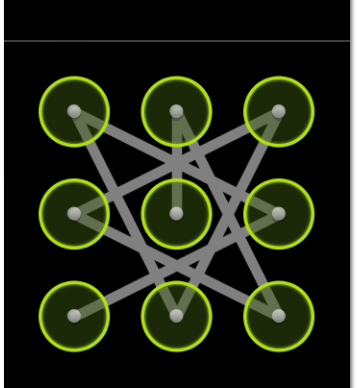

As you know the article is about Android pattern, a security system made by android, that will lock your android smartphone, the security system use a 3-by-3 node grid, the password is the connection between this nodes (I think everybody have seeing it).
My goal was to calculate the number of all possible patterns that we can use to lock an android phone, so I started searching using my limited knowledge in mathematics and combinatorics, and I really didn't go so far, the difficulty was in the special cases, when the pattern contain more than 3 nodes. Knowing that a pattern should contain at least 4 nodes, and visiting a node just one time each (that 's called Hamiltonian path in graph theory). Lets give each node a number in the pattern,
1 2 3 4 5 6 7 8 9A password is the combination of this number for example (1, 2, 3, 4), (5, 3, 6, 8, 7, 4, 1) or (1, 5, 9, 8, 7, 3), there's some other illegal examples like :
So to count the number of possibilities I made a sample script with python that will do that.
1 2 3 4 5 6 7 8 9 10 11 12 13 14 15 16 17 18 19 20 21 22 23 24 25 26 27 28 29 30 31 32 33 34 35 36 37 38 39 40 41 42 | count = [0] * 10 def middle(a, b): if (a+b) % 2 != 0: return None mid = (a+b)/2 if mid == 5: return mid if a%3 == b%3: return mid if (a+b) % 3 == 1: return mid return None def poss(l=[]): if len(l) == 0: for x in range(1, 10): yield x return for x in range(1,10): mid = middle(x, l[-1]) if (x not in l) and (mid in l or mid == None): yield x def comb(l=[]): ll = len(l); if ll == 10: return global count t = list(poss(l)) # print t if ll >= 4: count[ll] = count[ll] + 1 for x in t: comb(l + [x]) # print list(poss([x])) comb() print count print "The number of all possibilities is : %i" % sum(count) |
The first function middle will give us the middle node between two nodes, for example, middle(4,6) will return 5, if two nodes don't have a middle, the function will return None, the second function, poss, take as parameter a list of numbers l, the list is a pattern of length n, so the function will return all the pattern possibilities of length n+1, and that start with l list, the last function comb is the main function it will generate all the possibilities and count them, the result will be accumulated to the count variable. The result of the this script will be :
[0, 0, 0, 0, 1624, 7152, 26016, 72912, 140704, 140704] The number of all possibilities is : 389112